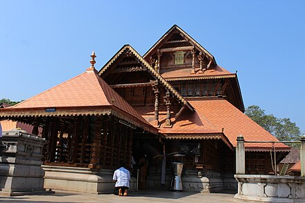
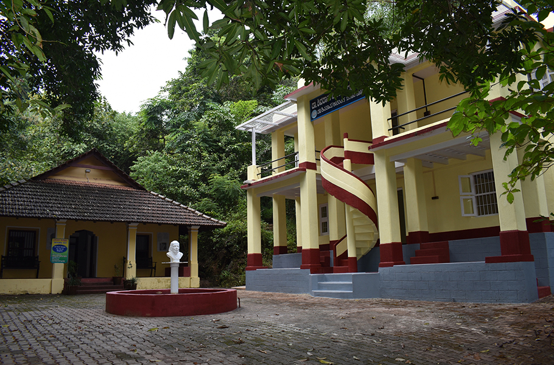
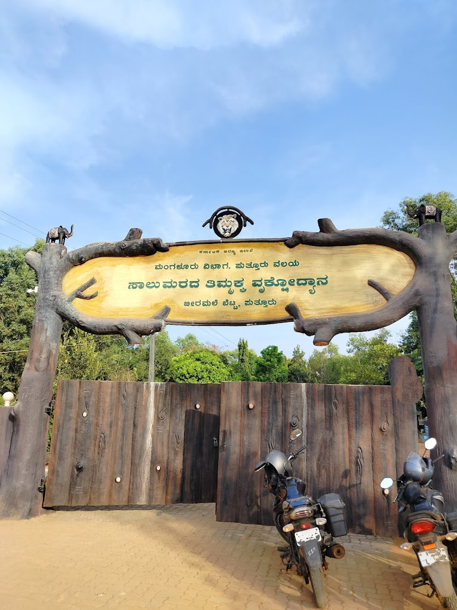
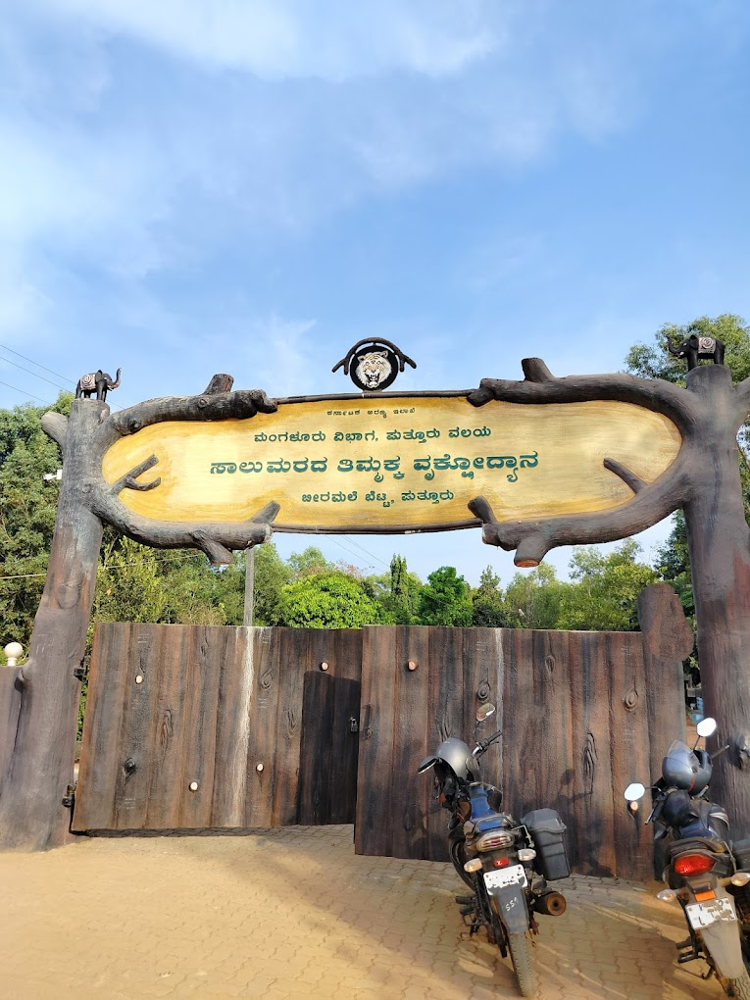
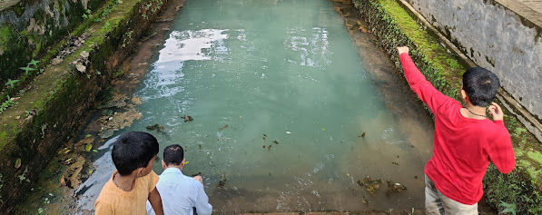

Places to Visit
Mahalingeshwara Temple
Mahalingeshwara Temple in Puttur, Karnataka, is an ancient Hindu temple dedicated to Lord Shiva. With origins believed to date back to the early medieval period, the temple has long been a center of devotion and cultural heritage in the region. It is said that the Pandavas worshipped Shiva here during their exile, lending the temple its historical significance. The temple is renowned for its annual festival, the "Puttur Jatre," a grand celebration during Maha Shivaratri that attracts thousands of devotees. This festival features elaborate rituals, processions, and cultural events, reflecting the deep spiritual and cultural roots of the temple in the community.
Baalawana Park and Museum
Shivaram Karanth Baalavan Park, located in Puttur, Karnataka, is a tribute to the renowned Kannada writer and environmentalist, Dr. Kota Shivaram Karanth. Established to honor his legacy, the park features a museum, playgrounds, and lush greenery, reflecting Karanth's deep connection with nature and his efforts to promote environmental awareness. The park serves as both a recreational space and a cultural center, offering visitors a glimpse into Karanth's life and work. The best time to visit is in the early morning or late afternoon, when the park's natural beauty is most serene and enjoyable
Salu-Marada Timmakka Park at Highest Peak in Puttur "Birumala Gudde"
Salumarada Timmakka Park, located in Puttur, is dedicated to Salumarada Timmakka, a renowned environmentalist known for her efforts in planting trees and promoting green initiatives. The park honors her legacy with lush greenery and well-maintained landscapes, providing a peaceful retreat for visitors while highlighting her commitment to environmental conservation. Birumala Gudde, situated near Puttur, is a picturesque hill known for its scenic beauty and tranquil surroundings. It is a popular spot for nature lovers and trekkers, offering panoramic views and a serene environment. The hill's natural charm makes it an ideal destination for relaxation and outdoor activities.
 

Bendru Theertha: Natural Hot Spring of Puttur
Bendru Theertha, a natural hot spring located in the scenic hills around Puttur, offers a unique experience with its therapeutic, mineral-rich waters. It is a popular spot for relaxation and rejuvenation, attracting visitors who wish to enjoy its healing properties amidst nature's tranquility.
Kodipady's 3500 Year old Palava Dynasty's Janardhana Temple
Kodipady Janardhana Temple, located near Puttur in Karnataka, is a revered Hindu shrine dedicated to Lord Janardhana, a form of Lord Vishnu. Known for its serene and picturesque setting, the temple is a significant spiritual site for devotees in the region. Its architecture reflects traditional South Indian temple design, and it hosts various religious festivals and rituals throughout the year. The peaceful ambiance and the temple's cultural significance make it an important place of worship and pilgrimage for the local community.